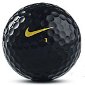

Golf's most exciting ball and Nike Golf's longest, the Nike One Black, closed out the 2004 golf season on a high note, and thanks to hot starts by Stewart Cink and K.J. Choi, and a win by Justin Leonard, the Nike One Black is rolling in 2005; however, the Nike One Black's literal iteration, a black Nike One Black has temporarily taken the stage.
Due to incredible demand for the black Nike One Black, Nike Golf will offer a limited number of two-ball sleeves of the black Nike One Black with the purchase of a dozen Nike One Black or Nike One Gold golf balls at participating golf shops and golf specialty stores. The Suggested Retail Price for a dozen of Nike Golf's One Black and One Gold golf balls is $54.
Golfers looking for the unique black ball need to ask their local shop or specialty store to take part in the program that Nike Golf is making available to store owners. The black One Black two-ball sleeves are expected to begin shipping by the end of February and will only be available while supplies last. Only on-course and off-course locations that opt to take part in the program will receive a limited run of the black One Black.
Excitement around the Nike One Black began late in 2004 when Nike Golf's longest ball was part of seven professional Tour wins over a 10-week period. Stewart Cink, Craig Stadler, Grace Park, DJ Trahan and Chris Nallen all contributed to the streak. Cink, who worked with ball designer Rock Ishii to create the Nike One Black, contended with the One Black at the Mercedes Championships and the Sony Invitational to start the year before Justin Leonard carried it to victory at the Bob Hope Chrysler Classic.
John Cook was the first to tee up the black One Black at the Sony Invitational on Saturday, January 15. It was the first time a black golf ball had been put in play on the PGA Tour, but it would not be the last. At last week's FBR Open, Rory Sabbatini, Justin Leonard, K.J. Choi and Stewart Cink each teed up the black Nike One Black on the par-3 No. 16. Each day they passed through No. 16 they teed it up. Ironically, Cink, Choi and Sabbatini were all grouped together for Saturday's Third Round, making for an interesting sight with three black golf balls on the green. The buzz from "the most exciting hole in golf" carried far beyond Scottsdale, Arizona and calls for the black Nike One Black started rolling in before the tournament ended.
Nike Golf's Global Sports Marketing Director, Kel Devlin, said that the black Nike One Black has not been retired but it will be up to the players to decide when and where they would put it into play again. Stay tuned.
2/2005